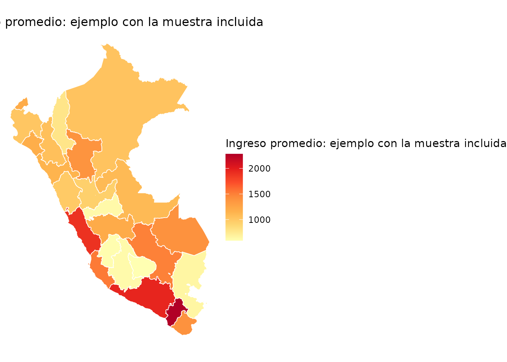

Esta guía muestra qué recibe cada función, qué devuelve y cuáles son sus límites. Los ejemplos usan datos incluidos en el paquete para ser reproducibles.
Descubrir y descargar datos
catalogo()
Permite saber qué fuente, variante, año y periodo ha procesado el
proyecto. La descarga automática de esta versión se limita a EPEN; las
entradas ENAHO son parte del inventario y no implican que
descargar() pueda obtenerlas.
catalogo(fuente = "EPEN", variante = "departamentos_anual")
#> # A tibble: 4 × 6
#> fuente variante year periodo filas codigos_ocup
#> <chr> <chr> <dbl> <chr> <dbl> <dbl>
#> 1 EPEN departamentos_anual 2022 Anual - (Ene-Dic) 192416 439
#> 2 EPEN departamentos_anual 2023 Anual - (Ene-Dic) 196595 449
#> 3 EPEN departamentos_anual 2024 Anual - (Ene-Dic) 200630 434
#> 4 EPEN departamentos_anual 2025 Anual - (Ene-Dic) 207407 438
descargar()
Descarga el módulo de empleo e ingresos de la EPEN y devuelve sus variables originales. Puede guardar una copia local para evitar repetir la descarga.
epen_2024 <- descargar(
year = 2024,
destfile = "datos/epen_2024.rds"
)La función no descarga la EPE histórica. Para esa encuesta, la persona usuaria debe aportar su archivo.
Hacer legibles y comparables las variables
etiquetar()
Convierte códigos de las bases procesadas en factores o texto. Una
etiqueta de valor mantiene la variable compacta —por ejemplo,
1 y 2— pero muestra su significado
—Hombre y Mujer— durante el análisis.
etiquetada <- etiquetar(
muestra_epen_2024[1:6, ],
vars = c("sex_code", "education_code")
)
#> ✔ 2 variable(s) etiquetadas.
etiquetada[c("sex_code", "education_code")]
#> # A tibble: 6 × 2
#> sex_code education_code
#> <fct> <fct>
#> 1 Mujer Sup. no universitaria completa
#> 2 Hombre Secundaria incompleta
#> 3 Mujer Primaria incompleta
#> 4 Mujer Sin nivel
#> 5 Hombre Primaria incompleta
#> 6 Hombre Sup. no universitaria incompletaEn esta versión, etiquetar() reconoce nombres comunes de
las bases procesadas. No etiqueta automáticamente todas las columnas
originales del módulo 76.
cno()
Añade código y descripción del CNO 2015. Con EPE puede homologar CO-95 mediante la tabla oficial sin inventar una asignación en los casos ambiguos.
ocupaciones <- cno(muestra_epen_2024[1:6, ])
#> ℹ Clasificador segun la encuesta de la base: CNO_2015
ocupaciones[c("occupation_code_raw", "cno_cod", "cno_desc")]
#> # A tibble: 6 × 3
#> occupation_code_raw cno_cod cno_desc
#> <dbl> <chr> <chr>
#> 1 5212 5212 Vendedores minoristas en tiendas y establecimient…
#> 2 6114 6114 Agricultores y trabajadores calificados de cultiv…
#> 3 9111 9111 Limpiadores y asistentes domésticos
#> 4 9211 9211 Peones de explotaciones agrícolas y ganaderas
#> 5 6114 6114 Agricultores y trabajadores calificados de cultiv…
#> 6 7231 7231 Mecánicos y reparadores de vehículos de motorEjemplo mínimo con un código CO-95 de múltiples destinos:
epe_ejemplo <- data.frame(
source = "EPE",
year = 2019,
p204a = "262"
)
cno(epe_ejemplo, homologar = TRUE)[
c("cno_cod", "cno_homologado", "cno_candidatos", "homologacion_estado")
]
#> ℹ Clasificador segun la encuesta de la base: CO_95
#> ✔ Columna cno_homologado agregada con equivalencias CNO 2015.
#> ℹ 0% de las filas tiene una equivalencia unica.
#> ℹ Los casos con varios destinos quedan en NA; ver cno_candidatos y
#> homologacion_estado.
#> cno_cod cno_homologado cno_candidatos homologacion_estado
#> 1 262 <NA> 2412; 2631 multiples_destinosIncorporar el índice de exposición a IA
ia_exposicion()
Une cada ocupación CNO válida con un puntaje continuo de 0 a 1. También puede incorporar la mediana, dispersión y el tipo de exposición predominante.
con_ia <- muestra_epen_2024 |>
cno() |>
ia_exposicion(score = "ambos", incluir_tipo = TRUE)
#> ℹ Clasificador segun la encuesta de la base: CNO_2015
#> Warning: ℹ Filas con score de IA: 1961 (98%).
#> ! 39 (2%) con codigo CNO sin score en el indice.
#> ℹ Resumen por encuesta y ano: `cobertura()`.
con_ia[1:6, c(
"cno_cod", "cno_desc", "ia_score_mean", "ia_score_median", "ia_tipo"
)]
#> # A tibble: 6 × 5
#> cno_cod cno_desc ia_score_mean ia_score_median ia_tipo
#> <chr> <chr> <dbl> <dbl> <chr>
#> 1 5212 Vendedores minoristas en tienda… 0.599 0.617 A
#> 2 6114 Agricultores y trabajadores cal… 0.264 0.242 N
#> 3 9111 Limpiadores y asistentes domést… 0.0625 0.05 N
#> 4 9211 Peones de explotaciones agrícol… 0.05 0.05 N
#> 5 6114 Agricultores y trabajadores cal… 0.264 0.242 N
#> 6 7231 Mecánicos y reparadores de vehí… 0.238 0.15 NEl puntaje no es una probabilidad de pérdida de empleo. Mide exposición potencial de tareas a herramientas de IA generativa.
cobertura()
Antes de resumir el índice conviene medir qué parte de la muestra tiene código, homologación y puntaje.
cobertura(con_ia)
#> Warning: 81 fila(s) con weight NA no suman poblacion.
#> source year estado detalle n pct_n poblacion pct_poblacion
#> 1 EPEN 2024 con_score <NA> 1961 98.05 165010.121 97.26
#> 2 EPEN 2024 sin_score <NA> 39 1.95 4651.136 2.74Calcular y consultar indicadores
indicadores()
Calcula medias y medianas ponderadas de ingresos y horas, a nivel nacional o por grupos.
indicadores(
con_ia,
indicador = "ingreso_promedio",
por = "sex"
)
#> Warning: 81 filas eliminadas por peso NA o cero.
#> ℹ Diseno muestral provisional: estrato strata_code y UPM .upm; ver
#> `?indicadores`.
#> This message is displayed once per session.
#> sex indicador estimado error_std
#> Hombre Hombre ingreso_promedio 1606.021 71.54815
#> Mujer Mujer ingreso_promedio 1209.925 71.30004Los estimados puntuales usan el factor disponible. Los errores estándar se calculan con una reconstrucción reproducible del estrato y la UPM, pero deben considerarse provisionales: todavía no han sido reproducidos contra todas las precisiones oficiales del INEI.
resumen_nacional()
Consulta una tabla incluida de indicadores ya calculados por el proyecto.
resumen_nacional(
"EPEN",
year = 2024,
variante = "departamentos_anual"
)[, c(
"year", "activity_rate_pet", "employment_rate_pet",
"unemployment_rate_pea"
)]
#> # A tibble: 1 × 4
#> year activity_rate_pet employment_rate_pet unemployment_rate_pea
#> <dbl> <dbl> <dbl> <dbl>
#> 1 2024 0.698 0.659 0.0557La tabla debe citarse como un producto del pipeline del proyecto, no como una API oficial del INEI.
Visualizar resultados
mapa()
Recibe un indicador ya agregado y lo une con los polígonos geográficos. El nivel departamental es el recorrido probado y recomendado.
ingreso_dep <- indicadores(
muestra_epen_2024,
"ingreso_promedio",
por = "region_code"
)
ingreso_dep$departamento <-
shapes_departamentos$departamento[ingreso_dep$region_code]
mapa(
ingreso_dep,
var = "estimado",
tipo = "ggplot",
titulo = "Ingreso promedio: ejemplo con la muestra incluida"
)
#> ℹ Preparando shapes (departamento) via geoperu...
Este gráfico demuestra el funcionamiento de la función. La muestra de ejemplo no debe utilizarse como estimación departamental oficial.
Función experimental
panel()
panel() ayuda a auditar hogares o viviendas que
comparten una clave entre periodos. No identifica por sí sola a una
misma persona y todavía requiere validar muestra, región y variables de
panel en cada entrega. Se conserva como referencia experimental, pero
queda fuera del recorrido recomendado de la primera versión estable.